|
|
HELP FIND THE FOLLOWING LOCATIONS
PAGE 88DANGER MAN: Are You Going to be More Permanent? (Don Chaffey: 1964)
Unknown 1 - Jordan drives to the ruined house arranged by one of the Geneva agents. Later Drake makes the same journey.
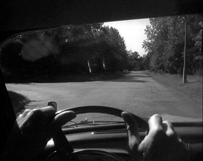
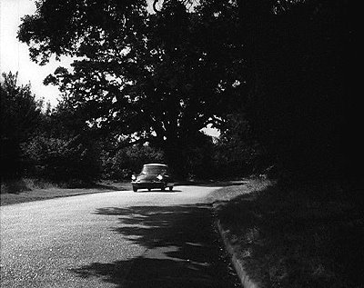
3, Route de Florissant, Geneva, Switzerland - Drake arranges to meet with Josef Laclos at the Geneva’s Natural History Museum.
(Identified by Paul Stroud, September 2014)
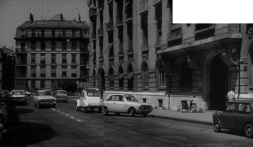
Villa Bonn, Siesmayerstraße, Frankfurt am Main, Germany: Wolf Kronenberger arranges to meet Drake at an empty villa to hand over the confidential material he has, he goes inside. The villa is for sale and is soon entered by a potential buyer and an agent.
(Identified by Geoff Dodd, January, 2022)
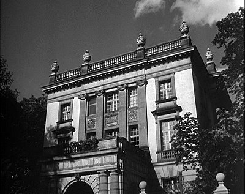
DANGER MAN: The Mercenaries (Don Chaffey: 1964)
Lake Nakuru, Kenya, Africa – Various stock shots to represent the African ‘Confederation’ and its neighbour.
(Idenified by Pierre Alfonsi, June 2024)

Unknowns 1 to 4 – Various stock shots to represent the African ‘Confederation’ and its neighbour.
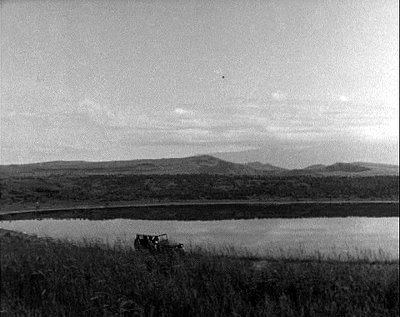


Palace of Wonders, Stone Town, Zanzibar : Stock shot to represent the African ‘Confederation’ and its neighbour.
(Identified by Geoff Dodd, January 2022)
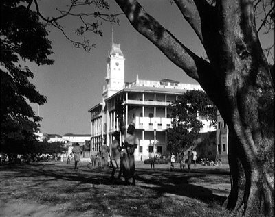
House of Assembly, Spanish Town, Jamaica: Stock shot to represent the African ‘Confederation’ and its neighbour.
(Identified by Geoff Dodd, January 2022)

Unknown 9 – Drake meets with ‘The General’ at a cross country race meeting to arrange a cover.
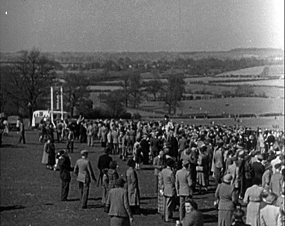
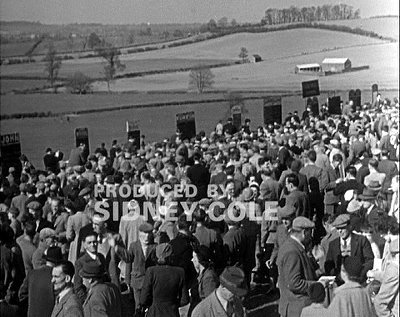
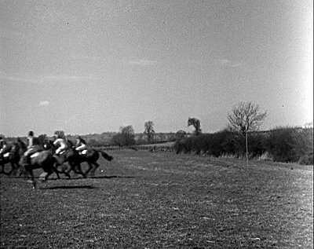
Unknown 10– Drake follows Doctor Winter after he leaves his home.
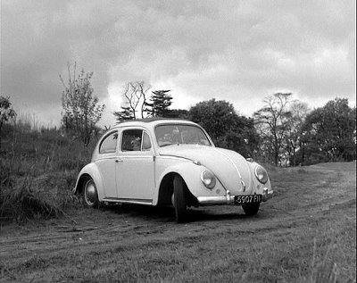
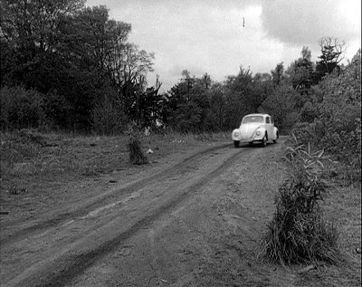
DANGER MAN: Parallel Lines Sometimes Meet (Don Chaffey: February 1965)
Newhaven, East Sussex – Westport Harbour
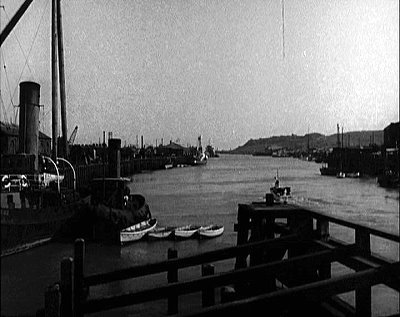
Unknown 1 – Vernon Brooks and Eirlys Brooks picnic in a deserted spot on the South coast of England.
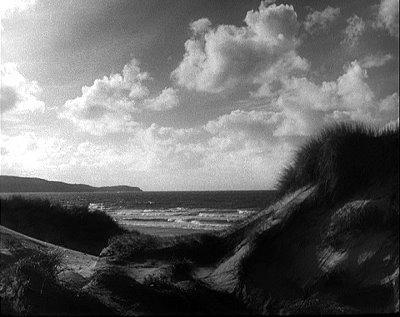
Sangster International Airport, Montego Bay, Jamaica – Drake flies in to Port-au-Prince.
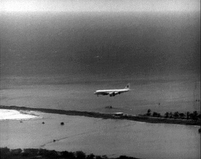
Unknown 2 – Drake reports to the World Travel offices in Port-au-Prince.

Frederick Street, Port of Spain, Trinidad – Drake reports to the World Travel offices in Port-au-Prince.
(Identified by Paul Stroud, June 2014)

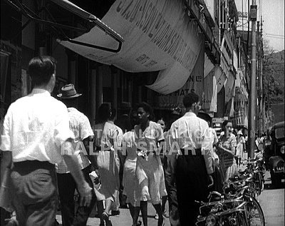
The Municipal Market In Kingston, Jamaica – Drake reports to the World Travel offices in Port-au-Prince.
(Identified by Sietse Postma, February 2025)

DANGER MAN: A Very Dangerous Game (Don Chaffey: 1964)
Hong Kong – Establishing shot of Singapore (Central, and Kowloon across the harbour, seen from the Mid-Levels).
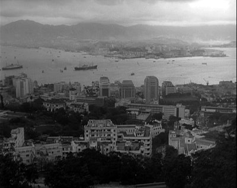
Unknowns 1 to 6 – The story is set in Singapore, but is all this stock footage actually Singapore?
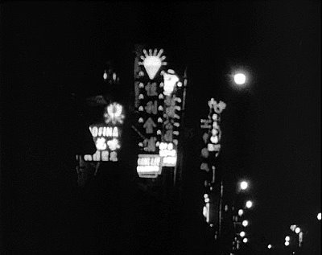
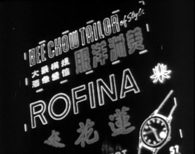
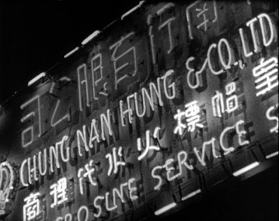
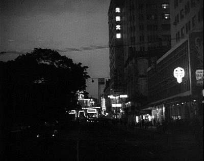
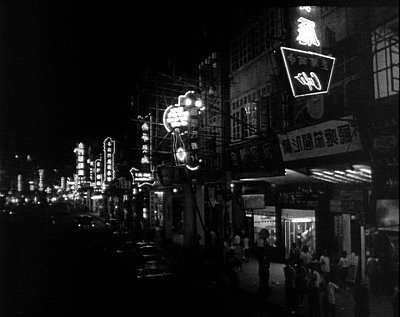
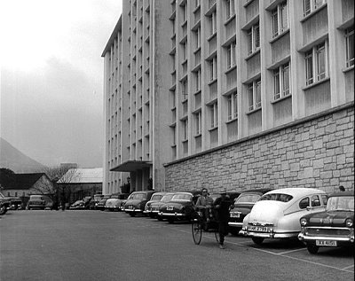
The Peninsula Hong Kong, Salisbury Rd, Tsim Sha Tsui, Hong Kong
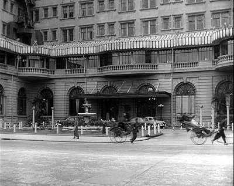
Victoria Theatre and Concert Hall, Empress Pl, Singapore
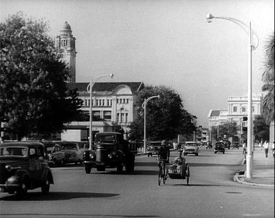
DANGER MAN: Sting in the Tail (Peter Yartes: 1964)
Unknown 1 – Drake flies into Beirut to catch up with the assassin Noureddine.

Bussaco Palace Hotel, Estrada Florestal, Mealhada, Portugal – Two of Noureddine’s thugs arrive at assassin’s home to him know that Marie Valedon has driven off with Drake.
(Idenitfied by Paul Stroud, May 2014)
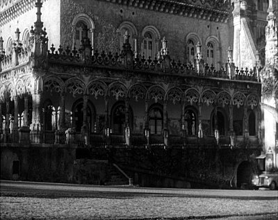
Think you know a spot? Need a bigger image? Email me.
< Previous | Index | Avengerland | Next >
Copyright © 2021 Anthony R. McKay